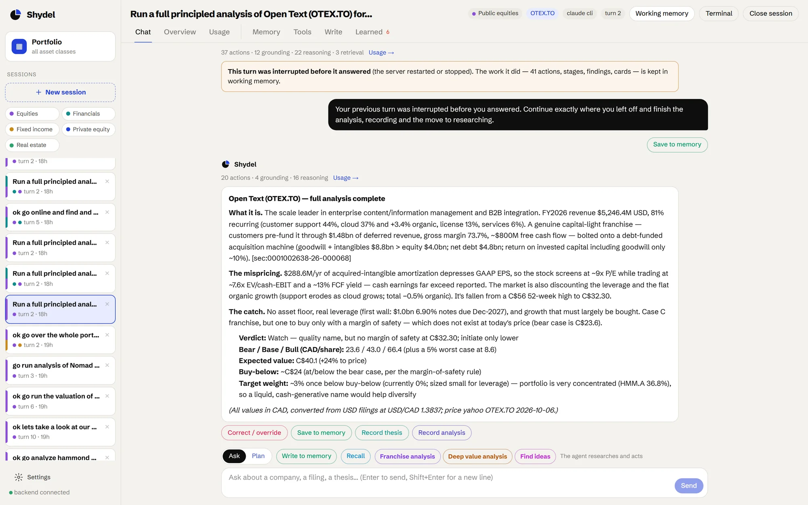

One analyst for the whole portfolio.
Shydel Agent is an AI analyst that works alongside your team. You talk to it in plain language. It pulls the filings, works through eighteen analysis stages in order, writes the thesis, valuation and scorecard cards, and places the company on your portfolio board. Every number it gives you points back to the filing it came from.
- Ask, or plan first. The reply is written for your decision; retrieval, reasoning and learning are kept in the Usage tab.
- Correct it in place. Override a number or a rule, give the why, and it learns from the correction.
- Record with a gate. Writing a thesis or moving a company on the board waits for your confirmation.

Every company in the book on one board: a lane per asset class, four columns, every holding a card you can open.
The board → The analysisEighteen ordered stages with cited findings, then the thesis, the valuation and a weighted scorecard.
The analysis → MemoryWorking memory for the session, long-term memory for the firm, and a learning loop gated on your why.
Memory → Data and toolsFilings from EDGAR and company sites, market data with fallbacks, macro rates, documents, all cited.
Data and tools →Runs in your environment.
Your model, your keys, your data directory. Every action is written to an audit ledger, and anything that changes the book waits for your confirmation. Nothing leaves the environment you choose to run it in.
Runs on the Claude CLI by default. Other models connect through LiteLLM. Data stays in a directory you control.
Every action is recorded. Writing a thesis, recording an analysis or moving a company on the board is gated behind your confirmation.
Public equities, financials, fixed income, private equity and real estate share one board, one analysis and one memory. Each class gets its own playbook.
We map your workflows, seed the memory with your framework, deploy it alongside your team and keep improving it.